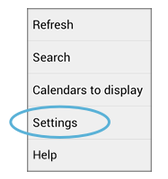
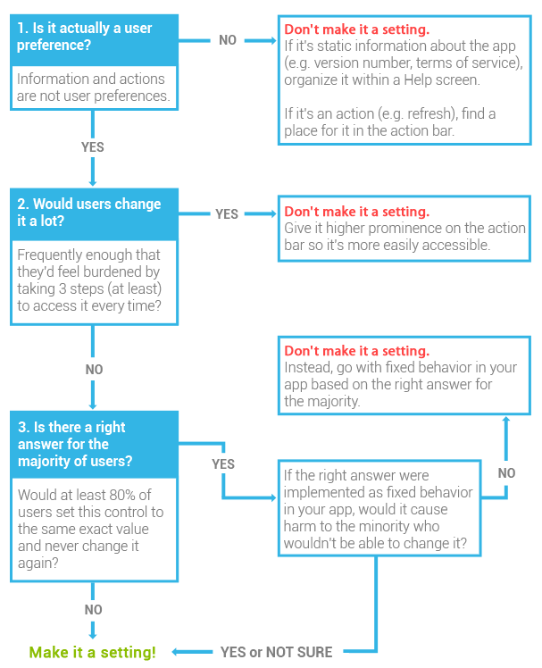

설정(Settings)은 앱 동작 방식을 사용자 취향에 따라 설정하는 곳입니다. 설정이 사용자에게 유용한 이유는:
설정은 자주 필요하지 않기 때문에 UI에서 중요성이 낮습니다. 액션 바에 공간이 남더라도 절대 설정을 액션 버튼으로 만들지 마세요. 언제나 액션 오버플로우 안에 "설정(영문 앱인 경우, Settings)"이란 이름으로 배치하세요. "도움말(영문 앱인 경우, Help)"을 제외한 모든 항목 최하단에 배치하세요.
설정은 어느 정도 탐색 단계를 거쳐 들어가야 하기 때문에 얼마나 많은 항목이 있든지 간에 UI의 주요 부분을 전혀 어수선하게 하지 않을 것입니다. 이것은 좋은 이야기처럼 보이지만 어려운 부분이기도 합니다.
설정은—마치 손님이 오기 전에 깨끗이 보이려고 임시로 물건들을 박아두는 복도 벽장처럼—많은 것들을 넣어 두고 싶은 유혹이 넘실대는 공간입니다. 많은 시간을 쏟을 곳도 아니기 때문에 어수선한 상태를 합리화하고 무시하기 십상입니다. 하지만 사용자는 설정에 들어왔을 때—아무리 자주 안 들어오더라도—앱 내의 다른 곳과 같은 경험을 설정에서도 할 거라는 기대를 할 것입니다. 더 많은 설정은 만드는 것은 더 많은 선택 사항을 의미하며 너무 많은 선택 사항은 감당하기 힘듭니다.
그러므로 어렵다고 "그냥 설정으로 빼자"고 결론 내고서 결과물에 대한 판단과 논의를 그냥 지나치지 마세요. 설정에 추가할 것을 고려 중인 항목이 있다면 다음 조건을 충족하는지 확인하세요:
사람이 단기 기억으로 기억할 수 있는 항목 갯수는 7±2개라고 합니다. (상단 기준을 적용한 후에도) 설정에 10개 이상의 리스트를 표시하고 있다면 사용자는 해당 항목을 찾고 이해하고 처리하기가 더 힘들 것입니다.
이 문제는 설정의 일부 혹은 전체를 그룹으로 나누어서 하나의 긴 리스트를 복수의 짧은 리스트로 효과적으로 바꿈으로 해결할 수 있습니다. 관련 설정 그룹을 둘 중 한 가지 방법으로 표시할 수 있습니다:
앱 설정을 조직하기 위해 이러한 그룹화 방법을 하나만 혹은 둘다 적용할 수 있습니다.
예를 들어 안드로이드 설정 앱의 주 화면에서 리스트 내 각 항목은 관련 설정의 부 화면으로 이어집니다. 그에 더해 각 항목은 섹션 분리선 아래 그룹화되어 있습니다.
설정 그룹화는 정밀 과학은 아니지만 앱 전체 설정 갯수에 따라 어떻게 접근하는게 좋을지에 대한 제안 사항이 있습니다.
그룹화 하지 마세요. 그룹화는 이득은 커녕 지나친 느낌이 듭니다.
한 두개의 섹션 분리선으로 관련 설정을 그룹화해보세요. 어떤 "싱글톤"(다른 설정과 관련도 없고 섹션 분리선 아래 그룹화 될 수도 없는 설정)이 있다면 다음과 같이 다루어주세요:
위와 같지만 2~4개의 섹션 분리자를 사용해주세요.
또한 리스트를 줄이기 위해 다음 사항을 따라주세요:
4개 이상의 관련 설정이 있는 경우 부 화면으로 그룹화하세요. 그 후 리스트 크기를 줄이도록 위에서 제안한 방법을 사용하세요.
해당 설정이 선택/비선택이 분명할 때 이 패턴을 사용하세요.
선택 사항 종류를 보여주어야 하고 사용자가 그 중 하나만 선택할 수 있는 설정인 경우 이 패턴을 사용하세요.
해당 설정이 일정 범위의 값이며 개별적이지 않고 연결되어 이어질 경우 이 패턴을 사용하세요.
해당 설정이 사용자에게 날짜와/혹은 시간을 얻어올 경우 이 패턴을 사용하세요.
더 복잡한 설정 작업을 위해 부 화면으로 이동하거나 여러 단계의 부 화면을 나열할 때 이 패턴을 사용하세요.
비슷한 수준의 항목 목록을 담고 있는 단순한 설정이나 설정 분류에 이 패턴을 사용하세요.
레이블에는 항목의 이름을 제공하고 보조 텍스트는 상태를 표시하는데 사용할 수 있습니다. (이 예제에서는, 레이블 우측에 아이콘으로 상태 표시를 보강하고 있습니다) 리스트와 연관된 액션을 리스트 자체에 넣는 대신 액션 바에 엮이도록 했습니다.
분류 전체 설정을 켜거나 꺼야 하는 동작 방식이 필요할 때 이 패턴을 사용하세요.
온/오프 스위치는 부 화면 액션 바의 첫 항목으로 배치합니다. 스위치를 끄면 리스트 내 항목들 또한 없애고 왜 리스트가 비었는지 설명하는 텍스트로 교체합니다. 이 스위치가 켜져야 어떤 액션들을 수행할 수 있다면 그 액션들 또한 비활성화됩니다.
또한 부 화면으로 이동하는 메뉴 항목에도 마스터 온/오프 스위치를 같이 둘 수 있습니다. 하지만 사용자가 한번 설정한 후에는 부 화면에 접근할 필요가 별로 없고 해당 스위치를 켜고 끄는 일이 더 많은 경우에만 이렇게 할 수 있습니다.
체크박스 양식 내 설명보다 더 상세한 설명을 필요로 하는 독립적인 설정에 이 패턴을 사용하세요.
온/오프 스위치는 부 화면에만 나타나므로 사용자는 설명문을 표시하지 않고서는 항목을 토글할 수 없습니다. 설정 레이블 밑 보조 텍스트는 현재 선택 사항을 반영해 표시합니다.
이 예제에서 안드로이드 빔의 기본 값은 켜짐 상태입니다. 사용자가 이 설정이 무얼 하는 것인지 모를 것이기 때문에 상태에 "켜짐" 대신 더 자세한 설명을 표시하도록 했습니다.
다른 설정 값에 따라 사용 가능 여부가 변하는 설정에 이 패턴을 사용하세요.
사용 불가 설정은 아무 들여쓰기 없이 하단에 의존성을 표기합니다. 만약 설정에 상태 줄이 있다면, "사용 불가"를 표시하고 사용 불가 이유가 명확하지 않다면 상태에 간략한 설명을 포함합니다.
해당 설정이 3개 이상의 설정에 의존해 있다면 마스터 온/오프 스위치가 있는 부 화면을 사용하는 것을 고려해 메인 설정 화면이 사용 불가 항목으로 지저분해지지 않도록 해주세요.
각 설정의 기본 값을 선택하는데 있어 세심한 주의를 기울이세요. 설정은 앱의 동작 방식을 결정하고 여러분의 선택이 사용자들이 받는 앱의 첫 인상의 원인이 될 것이기 때문입니다. 설정을 변경할 수 있다 하더라도 사용자는 초기 상태로도 쓸만하기를 기대하고 있습니다. 다음의 질문이 (해당한다면) 결정에 도움이 될 수 있습니다:
설정에 좋은 레이블을 붙이는 것은 공간이 매우 부족하기 때문에 꽤 어려운 일입니다. 단지 한 줄만 사용가능하며초소형 기기에서는 엄청나게 작기 때문입니다. 레이블을 간결하고 의미있고 쉽게 찾을 수 있도록 다음 지침을 따르도록 하세요:
설정에 붙일 레이블을 결정했다면 레이블이 어디서나 잘 보일지 세로 화면의 LDPI 핸드셋에서 확인해주세요.
아이스크림 샌드위치 이전에 종종 레이블을 설명하거나 지침을 제공하기 위해 레이블 밑 보조 텍스트를 표시했습니다. 아이스크림 샌드위치부터 상태를 표시하는데 보조 텍스트를 사용합니다.
| 화면 조명시간 |
|---|
| 화면 자동 꺼짐 시간 간격 조정 |
| 화면 끄기 |
|---|
| 사용 10분 후 |
보조 텍스트에 상태를 표시하는 것에는 다음과 같은 이점이 있습니다:
보조 텍스트를 상태로 사용하는데 있어서 한가지 중요한 예외가 있습니다: 체크박스 설정입니다. 다시 말해 보조 텍스트를 상태가 아니라 설명에 사용하세요. 체크박스 밑 상태 설명은 불필요한데 체크박스 자신이 이미 설명하고 있기 때문입니다. 체크박스 설정 밑에—다른 컨트롤과 달리—설명을 두는게 좋은 이유는 체크박스 설정은 추가 정보를 제공하기 위해 대화 상자를 표시하거나 다른 화면으로 이동하지 않기 때문입니다.
그렇긴 하지만 만약 체크박스 설정 레이블 자신이 충분히 목적을 설명하고 있다면 설명 또한 제공할 필요가 없습니다. 필요할 경우 하나만 포함하세요.
체크박스 설명을 작성할 때 다음 지침에 따라주세요:
이어지는 예제는 우리가 아이스크림 샌드위치 설정 앱에서 레이블과 보조 텍스트를 어떻게 변경했는지 보여주고 있습니다.
| 촉각 반응 사용 |
|---|
| 터치 시 진동 |
|---|
이 체크박스 설정에서는 필요 없는 "사용"이란 단어를 없애 버리고 레이블을 더 직접적이고 이해하기 쉽게 바꾸었습니다.
| 화면 조명 시간 |
|---|
| 화면 자동 꺼짐 시간 간격 조정 |
| 화면 끄기 |
|---|
| 사용 10분 후 |
이 다중 선택 설정의 레이블을 더 친절하게 바꾸고 상태 설명문도 바꾸었습니다. 선택 값 "10분"에 몇가지 설명 단어를 덧붙였는데 "10분"이라는 표현이 "10분 동안 화면 끄기"로 이해될 수도 있기 때문입니다/
| 화면 잠금 설정 |
|---|
| 패턴, PIN, 또는 비밀번호 보안을 변경하거나 사용 중지 |
| 화면 잠금 |
|---|
| 패턴 |
이 설정은 사용자가 화면 잠금 타입을 정하고 설정할 수 있는 일련의 부 화면으로 이동합니다. "설정"이라는 단어를 레이블에서 없앴고, 현재 사용자가 지정해 둔 화면 잠금 타입으로 설명을 대체했습니다. 화면 잠금을 설정하지 않은 경우에는 보조 텍스트로 "없음"을 표시합니다.
| NFC |
|---|
| NFC(근거리무선통신)로 태그를 읽거나 교환합니다 |
| NFC |
|---|
| 전화기가 다른 기기 터치 시 데이터 교환 허용 |
이 체크박스 설정에서는—기술 전문 용어이지만—"NFC" 레이블을 유지시켰습니다. 그 이유는: (1) 깔끔하고 간결한 다른 표현을 찾을 수 없었고, (2) 차후 몇 년 안에 이 약자를 친숙하게 받아들일 사용자가 극적으로 늘어날 것이라 예상했기 때문입니다.
하지만 설명문은 재작성했습니다. 전보다 훨씬 덜 기술적이지만 어떻게 그리고 왜 NFC를 사용할지 더 잘 알려줍니다. NFC가 무엇의 약자인지는 포함하지 않았는데 대부분 사용자에게는 의미가 없고 많은 공간만 차지하게 되기 때문입니다.
설정의 각 항목이 기준에 따라 해당 위치에 어울리는지 확인하세요.
7개 이상의 항목이 있다면 설정을 그룹화 할 수 있는 방법을 찾아보세요.
사용자가 학습 곡선에 맞닿지 않도록 어디서나 통용되는 디자인 패턴을 사용하세요.
안전하고, 중립적이고, 대부분의 사용자에게 맞는 기본 값을 선택하세요.
각 설정에 깔끔하고 간결한 레이블과 적절한 보조 텍스트를 달아주세요.